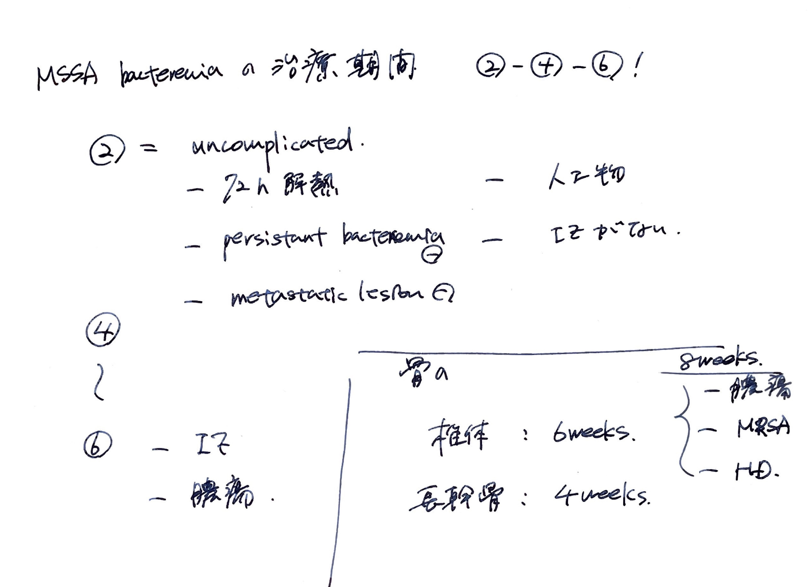

分類・特徴
- グラム染色
- 陽性球菌（クラスター状）
- コアグラーゼ
- 陽性
- カタラーゼ
- 陽性
- 常在
- 鼻腔・皮膚（健常成人の20-30%が鼻腔保菌）
- 代表耐性
- MSSA（感受性）／ MRSA（PBP2a獲得でβ-ラクタム耐性）
主な感染症
- 菌血症・敗血症（カテーテル関連・市中・院内）
- 感染性心内膜炎（IE）（右心系・人工弁・静注薬使用者で多い）
- 骨髄炎・化膿性関節炎・脊椎椎体炎
- 皮膚軟部組織感染（蜂窩織炎・膿瘍・フルンケル）
- 肺炎（市中・院内・誤嚥後）
- 毒素性ショック症候群（TSS、TSST-1）
第一選択薬
MSSA
セファゾリン or ナフシリン
IE/骨関節：高用量・長期
MRSA
バンコマイシン or ダプトマイシン
IE右心系：ダプトマイシン考慮
臨床上の注意点
- 菌血症は必ず TEE で IE 評価（黄ブ菌菌血症は IE リスク高）
- Persistent bacteremia は感染源精査・血培 q48-72h で陰性化確認
- 異物関連感染（カテ・人工弁・関節）はデバイス除去を強く検討
- VCM TDM は AUC/MIC ≥ 400 を目標（トラフ値ではなく AUC ベース）
- 血培は好気ボトルの方が陽性になりやすい（院内 ID/ICU 経験則）
グラム染色 像


